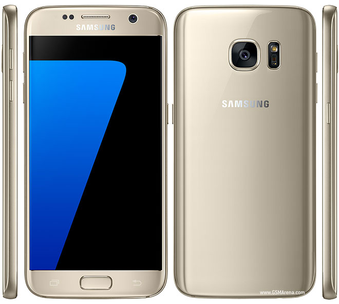
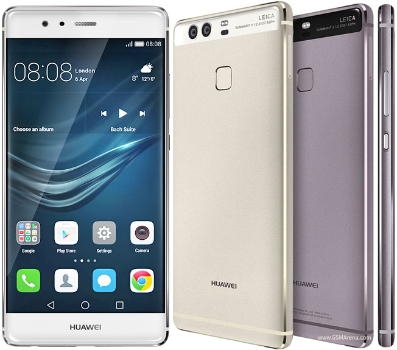

Introduction about Iphone 7
On the seventh day the designers rested. In came the engineers. And the master of controversy struck again.
Apple is proud of the bold move of removing the audio jack. But in pretty much every other aspect they've seemingly taken the conservative route. On the outside, the new iPhone looks basically the same as the iPhone 6/6s.
Apple iPhone 7 review
Well, it's not as easy as that. The iPhone 7 is in many ways a better phone. We can see some of the issues we had with the last iPhone sorted and, no, we are not claiming credit for it - simply acknowledging the fact.
Waterproofing, stereo speakers and, finally, reasonable storage options - and that's on top of the usual performance upgrades we've come to take for granted every year. Think this is the story of the iPhone 7? Apple's first water-resistant handset, first quad-core processor, first pair of stereo speakers on a phone.
Not trying to build suspense. The story has been hijacked and you know it. But we're going to tell it anyway.
Key features
Water-proof metal unibody with redesigned, less-obtrusive antenna strips
4.7" 16M-color LED-backlit IPS LCD of 750 x 1334px resolution, 326ppi, wide color gamut, 3D Touch tech
Pressure-sensitive Home key powered by a brand new Taptic Engine
Quad-core (2+2) 64-bit Apple CPU, hexa-core GPU, 2GB of RAM, Apple A10 Fusion SoC
12MP F/1.8 camera with a quad-LED flash, optical image stabilization, phase detection auto focus, wide color capture, face and body detection; 2160p@30fps video recording
7MP F/2.2 front-facing camera with BSI sensor and HDR mode, 1080p@30fps video
Comes in 32, 128, and 256GB of built-in storage
Second-gen Touch ID fingerprint sensor
4G LTE Cat.12 (600Mbps); Wi-Fi a/b/g/n/ac; Bluetooth 4.2; Lightning port; GPS with A-GPS and GLONASS; NFC (Apple Pay only)
1,960mAh battery
Main shortcomings
No 3.5mm audio jack (ships with a Lightning to 3.5mm adapter)
No microSD slot
No dual-camera of the iPhone 7 Plus
NFC functionality limited to Apple Pay
Still no fast or wireless charging, no IR port or FM radio
No user-replaceable battery
Scratch-prone Jet Black model
Screen resolution not flagship-grade
Once you wrap your head around the missing audio jack (it's not the end of it, you can get a designated adapter for your favorite headphones), the Apple iPhone 7 is a major upgrade. IP67-certified water-resistant body. Bigger and brighter camera with OIS. New FaceTime cam. Stereo speakers. Faster processor and 50% GPU performance increase, more RAM. New pressure-sensitive Home key powered by a new taptic engine. Revised storage options.
The new Home button, rather the lack thereof, is nearly as controversial as the missing audio jack. Apple used the same taptic engine behind the MacBook's trackpad, so things might actually turn out better there.

Introduction about Samsung Galexy S7
Close your eyes and picture the Samsung Galaxy S6, but the way you wanted it to be, not the way it came out. Now open them and look at the Galaxy S7. Better? Let's see.
The Galaxy S6 was Samsung's response to growing criticism that the design of its high-end models just didn't live up to their price tag and market position. Okay then, a dual-glass sandwich with aluminum all around is premium enough, but you had to live without the storage expansion, replaceable battery and protection against the elements that were all available in the Galaxy S5.
The Galaxy S7 marks the return of the microSD slot and water-proofing, and while the battery is still sealed (which doesn't seem likely to change going forward), Samsung has been a lot more generous with the capacity for this generation.
Galaxy flagships have always led the way when it comes to imaging, their cameras always being among the top performers in the market. This time around, Samsung went backwards to play a different game of numbers: fewer but larger pixels, all 12 million of them capable of phase detection. Lightning-fast autofocus is the promise, and we've already seen the S7 deliver on it.
AMOLED has long since shaken off the stigma of being all punch and no precision, to actually bring the best of both worlds. The Always On displays are all the rage this season, and being able to light up individual pixels has always made this specific technology inherently suited for the job. "Why so late?" is probably the question to be answered.
Samsung Galaxy S7 key features
Premium dual-glass design, aluminum frame
5.1" Super AMOLED display, QHD (1,440 x 2,560) resolution, ~577ppi, Corning Gorilla Glass 4
Exynos 8890 chipset: quad-core 2.6 GHz Mongoose + quad-core 1.6 GHz Cortex-A53, Mali-T880 MP12 GPU (our review unit)
Snapdragon 820 chipset: dual-core 2.15 GHz Kryo & dual-core 1.6 GHz Kryo, Adreno 530 GPU
4GB of RAM; 32GB/64GB of built-in storage, microSD up to 200GB
Android 6.0.1 Marshmallow with TouchWiz and Samsung Pay
12MP camera, f/1.7 aperture, 1,4micron pixel size, phase-detection diodes at every pixel in the sensor, 4K video recording, LED flash, optical image stabilization
5MP front-facing camera, f/1.7 aperture, QHD video, HDR
Active noise cancellation via dedicated mic
Fingerprint scanner
LTE Cat.9, Wi-Fi a/b/g/n/ac, GPS/GLONASS/Beidou, NFC, IR port, Bluetooth 4.2, ANT+
3,000mAh battery, fast wired and wireless charging (Qi/PMA)
Main disadvantages
No FM radio (except for T-Mobile units in the US, so far)
No IR blaster
No stereo speakers
The FM radio is perhaps gone for good, the assumption apparently being that the jury has ruled in favor of streaming over the internet. The IR blaster is another feature due for retirement - the S6 had it, then the Note5 didn't, and now with the S7 the trend is clear.
Update: A software update has enabled the FM radio at least on T-Mobile S7/S7 edge in the US. It turns out the FM receiver hardware has always been there and was just not enabled at launch. The T-Mobile units are powered by the Snapdragon 820 chipset, so technically the option is there for all variants running on Qualcomm's chip. Our international unit, however, runs on the Exynos 8890 and so far we haven't heard of FM radio enabling update (if there ever will be one).

Introduction about Huawei P9
Huawei pulled the wraps off its next flagship in London in early April. London streets and buildings were the perfect backdrop for black-and-white photography and everything looked extra special through the P9's secondary black-and-white lens. But there is more to the P9 than just the duo of cameras. The P9 is a proper high-end device with the premium feel and build quality to go with it so after a short hands-on, we were more than eager to get started working on a full review.
Back in the day, the Huawei Ascend P6 was the first real push of Huawei towards the high-end market spectrum. It was notable for its super-slim design, metal frame, and beautiful panels.
The Huawei P7 improved on the design and hardware, while the P8 after it offered great night photography and selfie pictures.
Today, the P9 makes a big step ahead, opening the door to a new photography genre for mobile photographers and bringing along a bunch of nice shooting modes, faster hardware, and an even better design.
The Huawei P9 has a mid-sized 5.2" IPS 1080p display. It runs on the latest Kirin 955 chipset with 3GB of RAM, and comes with a plethora of connectivity options, and a beefy 3,000 mAh battery. But its key selling points are the exquisite design and exceptional photography skills.
The P9 comes with a duo of 12MP snappers co-designed with Leica - a regular 12MP sensor is joined by a second monochrome 12MP sensor - both with Leica optics and featuring hybrid auto-focus, which combines laser, depth, and contrast detection. On board, we also find Leica-exclusive color modes and a real-time shallow depth of field effect, among many others. And if you are into selfies, then the front 8MP camera will probably not disappoint.
And this is just the beginning. You can get the P9 with ceramic white finish, or brushed aerospace-class aluminum and each of those is as appealing as a piece of art. Interested already?
Huawei P9 key features
Aluminum with sandblasted finish or ceramic unibody
5.2" 1080p IPS LCD capacitive touchscreen, 423ppi
HiSilicon Kirin 955 chipset: octa-core CPU (4xCortex-A72 @ 2.5GHz plus 4xCortex-A53 @ 1.8GHz), Mali-T880 MP4 GPU
3GB of RAM/32GB of built-in storage, or 4GB/64GB;
Android 6.0 Marshmallow, Huawei EMUI v4.1 overlay;
Dual 12MP Leica camera with hybrid AF, color and monochrome sensors, f/2.2 aperture; 1080@60fps video recording
8MP front camera, f/2.4 aperture; 1080p video recording; wide selfie
Hybrid DualSIM/microSD card slot (up to 128GB)
Cat. 6 LTE (300/50Mbps); dual-band Wi-Fi a/b/g/n/ac, Wi-Fi hotspot, Wi-Fi Direct; Bluetooth 4.2 LE; NFC; GPS/GLONASS/Beidou; USB Type-C
3,000mAh Li-Ion battery, Rapid charging
Main disadvantages
No 4K 2160p video recording
Non-removable battery
Hybrid DualSIM/microSD card slot limits options on the dual-SIM model
No 3D Touch like the Plus model
No NFC for the Dual SIM model
Huawei P9 lacks three things the P9 Plus builds upon - the bigger 3D Touch-enabled screen, an AMOLED panel, and an AF 8MP snapper with f/1.9 aperture. Those three account for the €100 price gap. But both devices lack 4K video recording, which is not cool for one of the coolest flagships around. We don't know if it's a GPU thing or Huawei just can't do 4K capturing yet. But we really wish this wasn't the case.